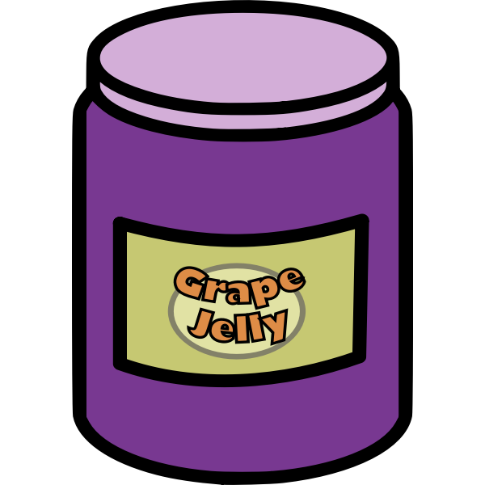

Jelly

Description
A sweet, clear, semisolid spread or preserve made from fruit juice and sugar boiled to a thick consistency, useful for making PB & J's.
Ingredients
- 4 cups fruit juice (grape, apple, or berry juice works well)
- 1 box of powdered fruit pectin (about 1.75 ounces)
- 5 to 7 cups of granulated sugar, depending on the fruit's sweetness
- 1/4 tsp butter or margarine (optional, to reduce foaming)
Steps
- Combine juice and pectin: In a large, heavy-bottomed pot, whisk the powdered pectin into the fruit juice until it dissolves. Add the optional butter to help reduce foaming.
- Bring to a boil: Bring the mixture to a full rolling boil over high heat, stirring constantly. A rolling boil is one that continues bubbling even when stirred.
- Add sugar: Stir in all of the sugar at once until it dissolves completely.
- Boil again: Return the mixture to a full rolling boil for exactly one minute, stirring constantly.
- Remove and skim: Remove the pot from the heat and quickly skim any foam from the top using a metal spoon.